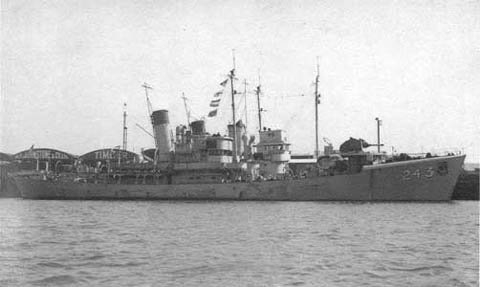

« First Dive Debriefing | Main | Homeland Security - circa 1942 »
July 03, 2004
Alexander Macomb and U-215 Anniversary Today
July 3, 1942. It was 62 years ago today that the Alexander Macomb and the U-215 went down. The "Harry Tate's Navy" website has an account of the day, as told to the son of a crewman on HMT Le Tiger, the ship credited with the U-215 kill.

HMT Le Tiger
"While in convoy BA-2 from New York to Halifax, Nova Scotia on the 3rd July 1942, Liberty ship ss Alexander Macomb was attacked and sunk by U-215. Two escorts rescued the survivors. HMCS Regina recovered 25 men and HMT. Le Tiger found 31. It was while she was carrying out this mercy mission that the ASDIC operator detected positive responses from a submerged U-Boat and Le Tiger went to action stations sinking U-215, her commander K.K. Hoeckner and his crew of 47." - from Harry Tate's Navy
Also, Jimmy Brown wrote the following history of Le Tiger for the Lowestoft Journal, which he has allowed us reproduce here below.
CHAPTER ELEVEN (10LT)
HMS LE TIGER
But what happened to our trusty ship, HMS Le Tiger (correct spelling), after we left her in the hands of Belfast’s dockyard mateys in October 1945?
To begin at the beginning, Le Tiger was built by Cochrane of Selby in 1937 with a gross tonnage of 516 tons, slightly bigger than many of the new ships arriving in Grimsby in that year. Her first owner was Sir Alec Black of the Earl Steam Fishing Company, who liked to name his ships after famous racehorses and comic book characters. This might explain her unusual name. She reached an unprecedented speed of 14 knots on her trials and on her maiden voyage to the White Sea she fetched home a catch of 3,400 boxes of fish, 1,200 of them haddock. Trawlers changed owners frequently in those days, possibly because of some quirk in the tax laws of the time, and Le Tiger is shown as being owned by the Hellyer Steam Fishing company in August, 1938, but back with Sir Alec Black in December of the same year. She retained her original name and port number of GY 398 throughout these moves. She remained with Sir Alec Black until January 1940, when he sold her to the Admiralty.
With the pennant number of FY 243, HMS Le Tiger became an anti-submarine trawler employed on convoy escort duties in the Western Approaches to the UK until early 1942 when she sailed for America as one of 24 such ships loaned to the United State Navy to help combat the German U-boat menace off the American East Coast.
Le Tiger had her moment of glory on July 3rd 1942 when she sank U 215 while escorting Convoy BA-2 from New York to Halifax, Nova Scotia.
Early in 1943 she sailed for Durban in South Africa and for the rest of the war she was employed escorting convoys round the Cape of Good Hope and onwards to Madagascar and Mombassa. I joined her at Durban in March 1945.
We sailed her home at the war’s end and after refitting in Belfast she finally returned to her homeport of Grimsby on Monday, July 29th, 1946 with a new fishing number, GY 312. Sir Alec Black had died in June 1942, and Le Tiger was now owned by Hellyer Brothers of Hull, although she continued to fish from Grimsby.
She passed to the Loyal Steam Fishing Company in November 1946, after a reminder of her glory days on Monday 9th September 1946 when her trawl exploded either a mine or a torpedo on the seabed. Her gear was completely destroyed by the explosion but there was no damage to the ship or her crew.
She kept her original name until July 1947, when she was renamed Regal. She left Grimsby for good when she passed to Hull owners in September 1948. These new owners changed her name yet again to Othello and gave her a new fishing number, H 581.
Le Tiger/Regal/Othello worked steadily from then on till she was sent to be broken up at Gwent in 1964. Her final claim to fame is that when she was scrapped she was the last coal-burning trawler to have sailed from the port of Hull.
Posted by administrator at July 3, 2004 03:40 PM
Comments
Post a comment
Thanks for signing in, . Now you can comment. (sign out)
(If you haven't left a comment here before, you may need to be approved by the site owner before your comment will appear. Until then, it won't appear on the entry. Thanks for waiting.)